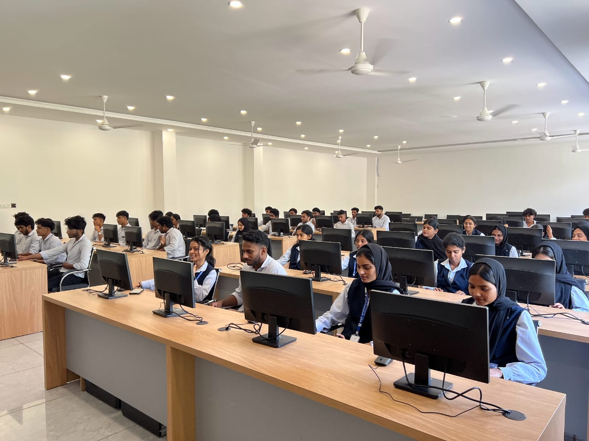

KMCT Institute of Technology and Management is a prestigious engineering college in Malappuram, with a key determination to provide the technology of tomorrow. The institution offers three B.Tech programmes, approved by AICTE and affiliated with APJ Abdul Kalam Technological University, Kerala, ensuring students receive quality engineering education. In addition to B.Tech Programs, the college also offers MBA, MCA, BBA, BCA, and Diploma in Engineering programs, catering to students pursuing business administration, computer applications, and technical fields. Situated at Kuttippuram, Malappuram, Kerala, our institution is driven by a resolute commitment to shaping the technology landscape of tomorrow and stands as a beacon of innovation in education.
| courses | Departments | Intakes |
|---|---|---|
| B.Tech AI and Datascince | Computer science | 60 |
| B.Tech in Computer Science and Engineering | Computer Science | 30 |
| Master of Computer Application | MCA | 50 |
| MBA | MBA | 60 |